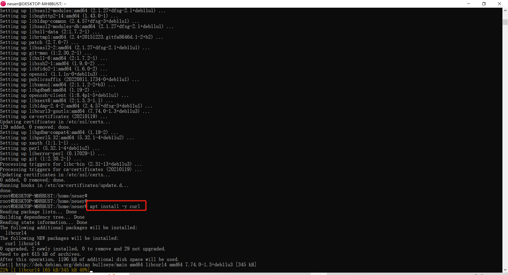

前言
新手必读
本教程面向Linux（一种操作系统）纯新手，务必每一步跟着教程来，如果你有学习精神，可以百度每一行指令的具体意思。
需要你复制粘贴的指令部分会用黄色底色做区别，实际操作只需要在本页复制操作指令，粘贴进系统即可完成
基本操作（看一下就行，操作中忘记了再回头来看）：
1、在光标闪烁时鼠标右键=粘贴 选中一行代码时鼠标右键=复制
2、Ctrl+c=取消当前输入的操作。例如你输入了一长串错误的指令又不想删除时，可以按下ctrl+c新起一行
运行节点
PS：本教程操作系统基于windows10及以上，喜欢使用VimWare及自建服务器的可跳过前面几步
下载安装linux系统（系统版本Debian）并安装节点
1、打开microsoft store
2、搜索下载并安装Debian系统
3、打开debian
4、注册
输入一个用户名，不要输入中文，其他的你开心就好。
例如此处我的用户名叫neuer
输入完后按下回车
5、设置密码
此处你输入密码是看不到的，请确保你的操作空间是在Debian系统内，输入一次密码后直接按回车即可，确认密码再输一次一模一样的就行，一定要记住你自己设定的密码！

6、登入系统并切换成root权限
输入sudo su并按回车
输入你刚刚设定的密码并按回车 注意，密码是看不见的！
7、进入系统并更新
输入apt update并按回车
如果你觉得更新过程中系统卡住了，可以按回车。除非是想取消操作，否则不要在更新界面按ctrl+C
成功更新如图所示会出现一个Done
8、安装git
输入apt install -y git并按回车
系统会如图安装
成功安装
注：后面将不添加成功截图，如果出现
9、安装curl
输入apt install -y curl并按回车

10、安装wget
输入apt install -y wget并按回车
11、下载源代码
输入git clone https://github.com/3Dpass/3DP.git并按回车
12、进入3DP文件夹
输入cd 3DP/并按回车，
13、安装nightly
输入curl https://sh.rustup.rs -sSf | sh -s -- -y --default-toolchain nightly并按回车
成功如图
14、添加系统依赖项
输入source $HOME/.cargo/env并按回车
15、更新nightly
输入rustup update nightly并按回车
16、添加目标
输入rustup target add wasm32-unknown-unknown --toolchain nightly并按回车
17、安装依赖
输入apt-get install -y libclang-dev libssl-dev clang并按回车
18、安装依赖2
输入apt install -y libprotobuf-dev protobuf-compiler并按回车
19、安装make
输入apt-get install -y make并按回车
20、跳过编译步骤，直接下载编译好的包
输入wget https://github.com/3Dpass/3DP/releases/download/v0.0.6/poscan-consensus-x86_64-unknown-linux-gnu.tar.gz并按回车
这一步会直接下载安装好的编译包，不排除会有因为更新失效的可能，希望自行编译的移步官网教程进行接下来的步骤
21、解压编译包
输入tar xzf poscan-consensus-x86_64-unknown-linux-gnu.tar.gz并按回车
获取钱包并运行节点
1、获取钱包
输入./poscan-consensus generate-mining-key --base-path ~/3dp-chain/ --chain mainnetSpecRaw.json并按回车，
红框内那三行是你的助记词之类的重要信息，请务必用你能想到的任何方法保存好
2、插入你的钱包
输入./poscan-consensus import-mining-key 'your secret seed phrase' --base-path ~/3dp-chain/ --chain mainnetSpecRaw.json并按回车
'your secret seed phrase'这部分是你的助记词，也就是上一步中的secret seed，
3、设定钱包密码
输入./poscan-consensus key inspect --password-interactive --scheme Ed25519 "your secret seed phrase"并按回车
输入密码部分就跟开头你注册时输入的密码一样，是看不到的，你也可以直接回车跳过设置密码
4、插入到gran
输入./poscan-consensus key insert --base-path ~/3dp-chain/ --chain mainnetSpecRaw.json --scheme Ed25519 --suri 0x433e3d739172243686f442ab3b2ac784adf58760e4b92f3ab18d7b5ee7c66989 --key-type gran并按回车
--suri那后面一串改成你自己的Secret seed，红框部分
5、验证
输入ls ~/3dp-chain/chains/3dpass/keystore并按回车
6、运行
输入./poscan-consensus --base-path ~/3dp-chain/ --chain mainnetSpecRaw.json --name NodeName --validator --telemetry-url "wss://submit.telemetry.3dpass.org/submit 0" --author 0xe44fc084c280f9bc857362dad4a5d8f563008c3010cafb57a6d61cb19006c553 --threads 2 --no-mdns并按回车
NodeName改成啥都行，你的节点名字，甚至可以加表情，只要方便你查看； --author后面改成你自己的public key，如红框所示。
出现图示下方上传下载部分即为节点启动成功，其中target为目前最高块高度，best为你的同步高度